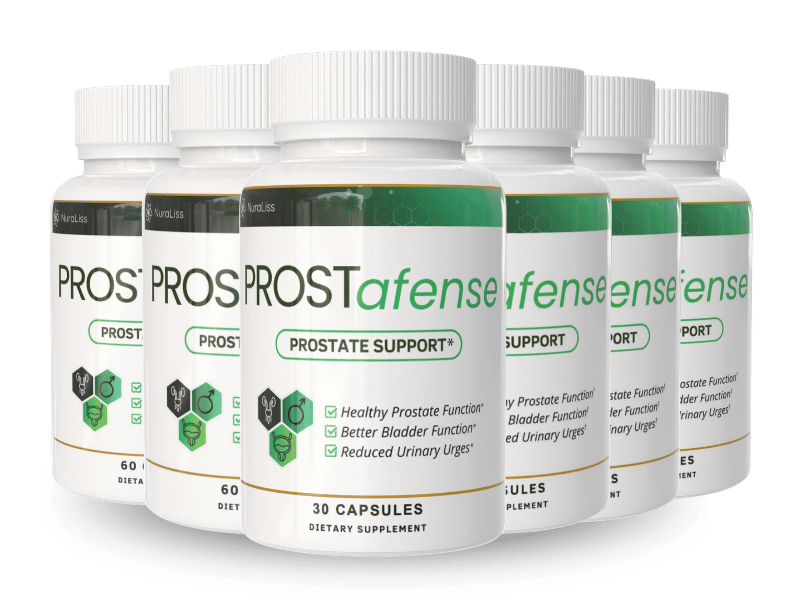

What Is ProstAfense And How Does It Work?
Somewhere past fifty, a lot of men quietly stop trusting their own bladder.
Not because anything hurts. Because the stream that used to be automatic now takes a second to start, tapers off before it should, and leaves behind a feeling that you never really finished — which is exactly what drags you out of bed again two hours later.
Nobody tells you why.
The tube that carries urine out doesn't run beside the prostate. It runs straight through the middle of it. As the gland thickens with age, it doesn't grow around that tube — it closes in on it, from every side. Call it the pinch point — one small ring of tissue squeezing a channel that has no room to compensate. A narrowed channel drains slower and less completely, and a bladder that never fully drains hits its "time to go" signal sooner. That's the whole chain, from the weak stream at noon to the third trip at 3 a.m.
ProstAfense is built to ease pressure at that exact point. It's a daily capsule centered on a 400mg Prostate Support Blend — 17 botanicals, mushrooms, and roots — layered with clinically dosed vitamins and minerals, aimed at normal prostate function, steady bladder control, and antioxidant defense at the cellular level.
Nobody relights the pinch point overnight. This is a formula that works with the body's own tissue over a real stretch of weeks, not a switch that flips on day two — but for the men it's built for, easing that one pressure point is the difference between planning a life around a bathroom map and not thinking about it at all.
ProstAfense Ingredients
Seventeen botanicals is not a marketing number — it's what it takes to work the pinch point from every angle instead of hoping one ingredient carries the whole formula.
Working directly on the gland:
- Saw Palmetto Berries (10:1): The single most studied botanical in men's prostate health, concentrated here at a 10:1 ratio to support normal prostate function and a stronger stream.
- Pygeum Africanum Bark (10:1): Saw palmetto's classic partner, aimed squarely at incomplete emptying and a stream that trails off — the two complaints men describe most when the pinch point is active.
- Plant Sterol Complex (beta-sitosterol and other phytosterols): The compound the research points to most consistently for healthy urinary flow, and a large part of why saw palmetto earns its reputation.
- Pumpkin Seed: Naturally rich in zinc and phytosterols, supporting bladder function and calmer urinary frequency.
Calming the bladder itself:
- Stinging Nettle Leaf (4:1): Eases irritation along the bladder wall — the sudden urgency that shows up independent of how full the bladder actually is.
- Uva Ursi Root Powder: Traditional urinary tract support for a steadier, calmer bladder.
- Juniper Berry: Long-standing traditional botanical support for the urinary tract.
Inflammation and cellular defense:
- Cat's Claw Bark (4:1): Supports the body's normal inflammatory response — relevant because inflammation is part of what tightens the pinch point in the first place.
- Broccoli Leaf Stems & Buds (10:1): A concentrated source of sulforaphane, one of the more studied compounds for cellular antioxidant support.
- Mushroom Trio (Maitake, Reishi, Shiitake): Beta-glucans for immune and cellular support.
- Burdock Root: Antioxidant compounds that support the body's own detoxification process.
- Antioxidant Support Complex (Red Raspberry, Green Tea, Tomato Powder, Cayenne Pepper): Broad-spectrum antioxidant and circulatory support — the tomato powder alone is the source of lycopene, one of the most researched nutrients in men's health.
Clinically dosed base:
- Selenium (70mcg, 125% DV): Antioxidant protection at the cellular level for prostate tissue.
- Zinc (5mg, 45% DV): Prostate tissue holds more zinc than almost any other tissue in the body — this keeps that reserve stocked and supports normal immune function alongside it.
- Vitamin E, Vitamin B6, Copper: Rounding out cellular antioxidant defense, normal hormone metabolism, and everyday energy.
Four ingredients on the gland itself, three calming the bladder, five on inflammation and cellular protection, and a mineral base dosed at real clinical percentages instead of trace amounts. That's the architecture — coverage, not a single ingredient asked to do all the work.
ProstAfense Side Effects
This is a formula built from things your body already recognizes.
Berries, bark, seeds, nettle leaf, mushrooms, and a mineral base dosed at nutritional levels — that's the entire ingredient panel. There isn't a synthetic compound in it forcing the gland to behave differently than it naturally would; every ingredient here is a naturally sourced botanical or nutrient supplied at a supportive amount.
That's a meaningful distinction, because it's exactly why a lot of men land on ProstAfense in the first place — they wanted a gentler starting point before considering anything more aggressive, and a botanical approach carries a correspondingly gentler profile. The formula is also stimulant-free, so there's no jittery edge standing in for progress.
Across the men taking ProstAfense as directed, there's no widespread pattern of adverse reports. Manufacturing backs that up: production happens in an FDA-registered, GMP-certified facility, which matters more with a 17-ingredient blend than a simple one — that's the level of oversight it takes to confirm every extract is actually present at its stated concentration, batch after batch.
As with any dietary supplement, check with a healthcare professional first if you have an existing medical condition or take prescription medication.
ProstAfense Dosage
Two capsules a day, before a meal, with a full glass of water. That's the entire routine — no titration schedule, no splitting doses across the day.
Each bottle holds 60 capsules, a clean 30-day supply, so a glance at the bottle tells you honestly whether you've kept up. Taking the capsules before a meal rather than after helps the body absorb the fat-soluble botanicals in the blend, and the full glass of water isn't a throwaway instruction — a lot of men quietly start cutting back on fluids to avoid nighttime trips, which only concentrates urine and irritates the bladder wall further. That's an understandable habit that works directly against the goal.
Prostate support builds over time and holds only with steady input. Two weeks on, one week off doesn't produce a smaller version of the result — it mostly resets you to zero. The manufacturer's guidance points to a full 90-to-180-day protocol, and most men notice the nighttime trips ease before the daytime stream changes much — so if the first shift you feel is one less wake-up rather than a stronger flow, that's the expected order, not a sign it isn't working.
For anyone planning past a single month, larger multi-bottle options bring the cost down per bottle and remove the friction of reordering mid-protocol. Every option ships as a single purchase — there's no subscription, no recurring charge quietly attached at checkout.
Stick to two capsules daily. There's no benefit to taking more.
ProstAfense – Refund Policy
Every ProstAfense order carries a 60-day, unconditional money-back guarantee.
Sit with why a company attaches sixty full days to a bottle that only needs thirty days to run out. A window that long only makes sense if the people behind the formula genuinely expect it to hold up under real, sustained use — a company unsure of its own product protects itself with a short window; sixty days is a bet on the formula, not a hedge against it.
Full terms and the exact process for requesting a refund are laid out on the official website — that's the right place to confirm current details before you order.
ProstAfense Customer Reviews
 Dennis Pruitt
Sacramento, CA
Verified Purchase – 6 Bottles
Dennis Pruitt
Sacramento, CA
Verified Purchase – 6 Bottles
"I'd gotten to where I set an alarm to wake my wife up before I even stood up, because otherwise the light from the bathroom would do it anyway. Two, sometimes three trips, and the stream itself had gone weak enough that I'd stand there longer than I care to admit. About six weeks into ProstAfense I realized I'd slept from eleven to five without moving. I actually checked the clock twice because I didn't believe it. Down to zero trips most nights now, and I finally feel like I get real sleep again instead of a string of naps."
 Gregory Hensley
Tulsa, OK
Verified Purchase – 3 Bottles
Gregory Hensley
Tulsa, OK
Verified Purchase – 3 Bottles
"Golf used to mean mapping out where the restroom was on every hole, which is a ridiculous thing to have to plan around at 61. My buddies noticed before I said anything — I'd disappear at the turn every single round. Around week seven that stopped being a thing I thought about. I played eighteen straight without a single detour last weekend, and one of the guys actually asked what changed. Feels good to just play again instead of managing it."
 Marcus Kessler
Columbus, OH
Verified Purchase – 2 Bottles
Marcus Kessler
Columbus, OH
Verified Purchase – 2 Bottles
"The dribbling was the part that got to me, if I'm honest — feeling done, zipping up, and then finding out I wasn't. I started carrying an extra layer just in case, which is not something I ever pictured doing at my age. Two months on ProstAfense and that finished feeling is actually finished now. No extra layer, no double-checking in the mirror before I leave the house. Small thing to some people. Not small to me."
ProstAfense – Where To Buy
Where this bottle comes from matters as much as what's in it.
ProstAfense isn't sold through Amazon, eBay, or Walmart, though similar-looking bottles occasionally show up there anyway. With 17 botanical extracts concentrated at ratios like 10:1, potency is the entire product — a bottle that sat in an uncontrolled warehouse for months looks identical on the shelf to a fresh one while delivering a fraction of the effect, and there's no way to tell the difference by looking at it.
The guarantee and the manufacturer's support only travel with an order placed directly through the official site. A marketplace purchase never actually reaches the manufacturer's own records, so the sixty-day window simply has nothing to attach to — there's no account on file to claim it against. That's a real thing to risk over a small difference in price.
Ordering direct keeps that chain unbroken from the facility to your door, guarantee included. Before you check out, confirm you're looking at the official ProstAfense website.
To ensure you're getting the authentic product, most users choose to visit the official website directly.
Is ProstAfense A Scam?
No — and the plainest evidence is a formula that's more expensive to make than it needed to be.
A cheap version of this category is saw palmetto, a filler, and a confident label — and it would sell almost as well, because few customers read an ingredient panel closely enough to notice the difference. Paying for pygeum at a 10:1 ratio, a full mushroom trio, and selenium dosed at 125% of daily value is a decision that only makes sense if the goal was actually closing the pinch point rather than protecting margin.
Cheap would have been easier.
The rest holds up under the same scrutiny. Every ingredient is named with its real concentration, not hidden behind "proprietary blend." Manufacturing happens in an FDA-registered, GMP-certified U.S. facility. It's a single purchase through BuyGoods, with nothing recurring added at checkout. And the guarantee runs a genuinely long sixty days — longer than most companies would offer if they doubted what was in the bottle.
It also won't pretend to be something it isn't. Urinary symptoms in men can have a range of causes, and some genuinely need a doctor's exam rather than a supplement — if you haven't had this looked at properly, that visit still comes first. And this isn't for every man; if you've already been thoroughly evaluated and a different route makes more sense for you, that's a legitimate call and nobody here is going to argue you out of it.
But if what's actually running your nights is the pinch point — the weak stream, the second trip, the feeling of never quite finishing — the math is straightforward. Two capsules a day, sixty guaranteed days, on a problem you can literally count trip by trip. Try it properly. If nothing's changed by the time the window closes, the guarantee covers it and the only thing spent was the waiting.
As with any dietary supplement, check with a healthcare professional before starting if you have an existing condition or take prescription medication.
For those who want to verify product details or check current availability, the official ProstAfense website remains the safest and most reliable option.
